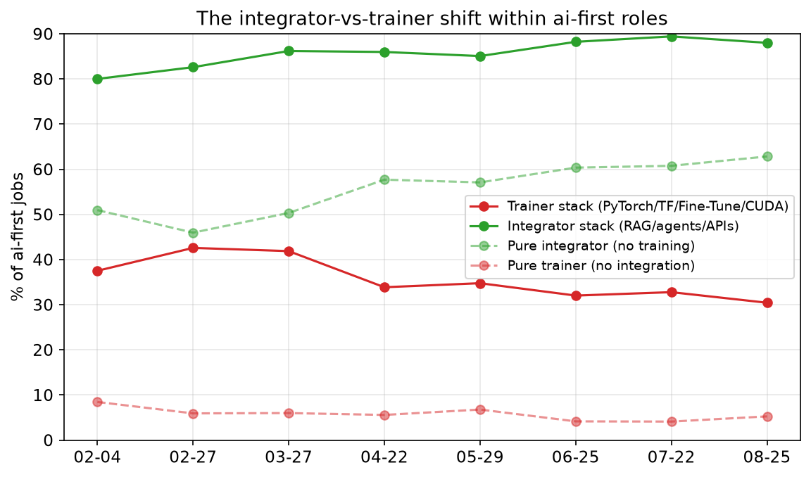
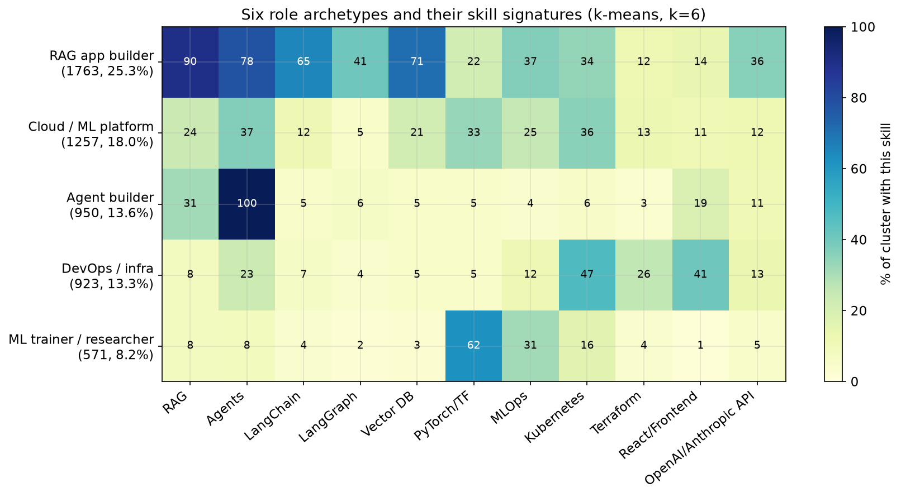
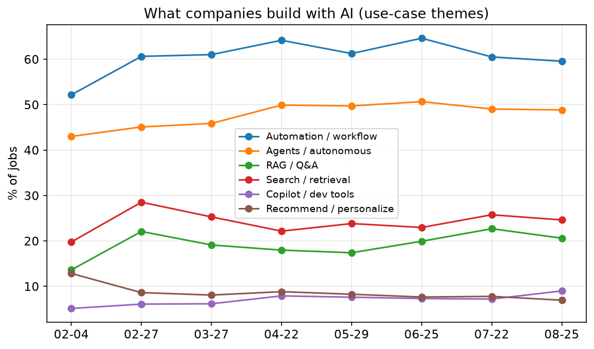
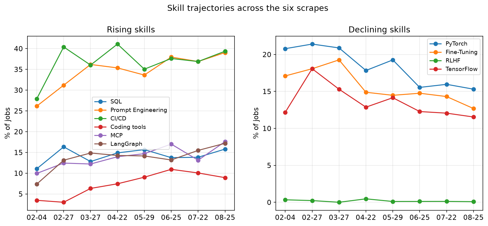
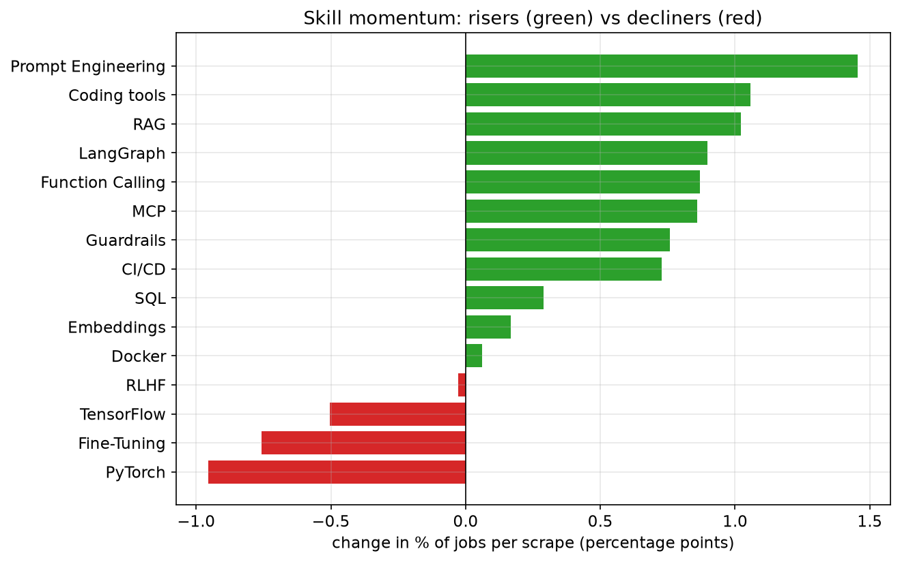

Alexey Grigorev
Eight scrapes, February - August 2026
6,964
job descriptions from 2,499 companies
builtin.com, LA, NY, London, Amsterdam, Berlin, India - 8 scrapes, Feb 4 to Aug 25, 2026
| Scrape | Jobs |
|---|---|
| Feb 4 | 895 |
| Feb 27 | 869 |
| Mar 27 | 680 |
| Apr 22 | 645 |
| May 29 | 919 |
| Jun 25 | 888 |
| Jul 22 | 846 |
| Aug 25 | 1,222 |
Zero job-ID overlap between scrapes - each month is an independent cross-section, not a panel
Before the trends
The LLM extraction model switched glm-5.1 to glm-5.2 partway through the six original scrapes
Some of what I previously reported as "market trends" was actually the extractor drifting, not the market moving
Rewrote the prompt, re-extracted the full Feb-Jul corpus, then graded old vs. new head-to-head on 50 jobs - blind, random order
| Metric | Old | New |
|---|---|---|
| Preferred (of 50) | 2 | 38 |
| Classification clean | 78.0% | 98.0% |
| Invented skills | 74 | 4 |
All 8 months now use one consistent, validated extraction
SQL was reported as the fastest-rising skill (+3.59 pp/scrape). On corrected data: a modest +0.5 pp/scrape.
Everything from here on uses the corrected, consistent extraction
Part 1
71.5% → 70.2%
Feb 4 to Aug 25 - essentially unchanged
The market has held a tight 68-71% ai-first band the whole eight months. No consolidation trend either direction.

Within ai-first jobs, all 8 scrapes
This is the strongest directional signal in the whole dataset - it got stronger, not weaker, once the extraction was fixed
| Stack | Feb 4 | Aug 25 |
|---|---|---|
| Integrator (RAG/agents/APIs) | 80.0% | 88.0% |
| Trainer (PyTorch/TF/FT/CUDA) | 37.5% | 30.4% |
| RAG + agents together | 33.1% | 50.5% |
Part 2

Spherical k-means, k=6, deterministic (seed=7)
| Archetype | % |
|---|---|
| RAG app builder | 25.3% |
| Cloud / ML platform engineer | 18.0% |
| Prompt-driven agent builder | 14.9% |
| Pure agent builder | 13.6% |
| DevOps / full-stack engineer | 13.3% |
| ML trainer / researcher | 8.2% |
Agent-building split into two clusters since the last analysis; DevOps and full-stack merged into one

% of postings whose use cases match, all 8 scrapes
Part 3


| Skill | Feb 4 | Aug 25 | pp/scrape |
|---|---|---|---|
| Prompt Engineering | 26.1% | 39.0% | +1.46 |
| RAG | 32.8% | 43.2% | +1.02 |
| LangGraph | 7.4% | 17.2% | +0.90 |
| MCP | 9.9% | 17.6% | +0.86 |
Not SQL - that earlier read was the extractor-switch artifact
| Skill | Feb 4 | Aug 25 |
|---|---|---|
| PyTorch | 20.8% | 15.3% |
| Fine-Tuning | 17.1% | 12.7% |
| TensorFlow | 12.2% | 11.5% |
Skill co-occurrence lift across all 6,964 jobs
LangChain → LangGraph 46% of the time (x3.3 lift) - strongest pair in the datasetRAG → embeddings (x2.2), vector DBs (x2.0), function calling (x1.9)PyTorch → MLOps (x2.2), Kubernetes (x1.4)MCP and Fine-Tuning now sit closer to the application stack than the training one
| Title | ai-first | Cust-facing |
|---|---|---|
| ai engineer | 88% | 16% |
| applied / forward deployed | 91% | 47% |
| ml engineer / scientist | 74% | 10% |
| platform / infra / devops | 47% | 11% |
| data engineer | 44% | 8% |
Applied / forward deployed is the only majority customer-facing group, by a wide margin
Part 4
19.8% → 9.9%
inference/serving share of ai-first jobs - roughly halved
Inference work keeps getting absorbed into the platform/infra archetype instead of forming its own mass role - a stronger null finding than before
187 postings, 2.7%
Feb 2.0% → peaked 4.4% in July → Aug 2.9%
| Level | Feb 4 | Aug 25 |
|---|---|---|
| Staff+ | 18.5% | 11.0% |
| Senior | 30.8% | 30.3% |
| Junior/Entry | 1.5% | 1.2% |
Junior hiring has stayed pinned near 1% the entire eight months. Now Staff+ is thinning too.
github.com/alexeygrigorev/ai-engineering-field-guide
⭐ Star the repo to keep an eye on updates
Newsletter: AI Shipping Blog